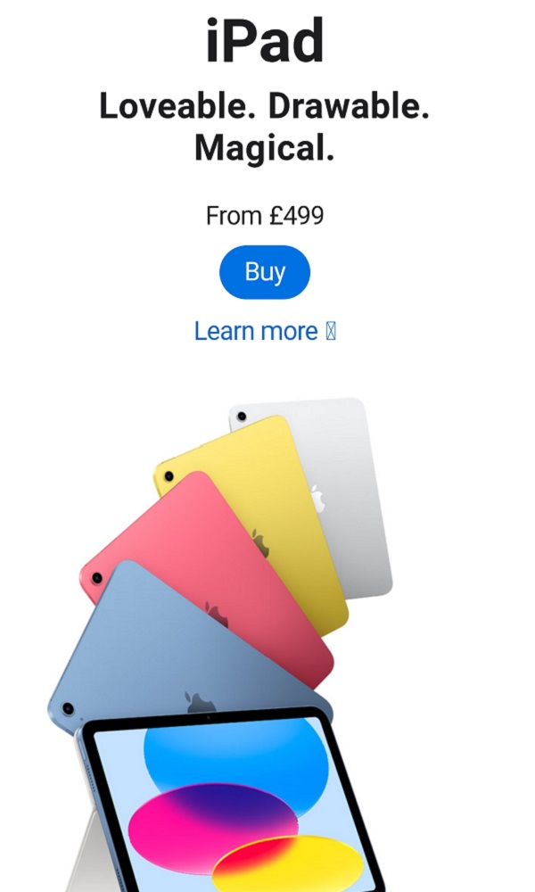

Visual Hierarchy
STAYLIME
staylime.comStaylime is a great example of how hierarchy can be applied to design.
The first thing that catches our attention is the headline "We help ecommerce evolve" and the CTA button. Using contrast in color and font size will achieve this.
Secondly, the background image conveys to the viewer that this is a digital agency.
Lastly in the hierarchy, we have the logo and hamburger menu.
Repetition
APPLE
apple.com/uk Apple's website is a great example of how repetition can be applied to design.
The repetition of the iPad creates a flow that emphasizes the importance of this visual element. Clearly, Apple uses this communication strategy to attract consumers' attention.
Further images of iPads are displayed on the page, stimulating the consumer's desire to own one. Repetition is not only applied to visual elements but also to the layout of the website as well.
White Space and Clean Design
MADE.COM
next.co.uk/made
Made.com website is an excellent example of white space and clean design applied principle. The use of white space clearly communicates high-end, premium and elegance.
White space (also known as negative space) doesn’t have to be white. It is in fact used to separate various elements in the page layout. As mentioned on cxl.com, “White space is all about the use of hierarchy for information, typography, colour, or images”.